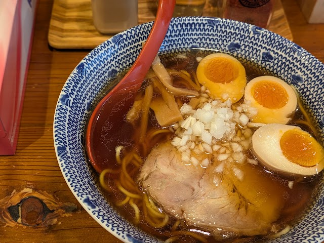
| 営業時間 | 月・火・水・木・金・土 11:00〜16:00 |
|---|---|
| 定休日 | 日曜 |
| 住所 | 東京都八王子市明神町３丁目１１−１ |
| 予約 | 要確認 — ☎ 042-645-5011 ／ 公式サイト |
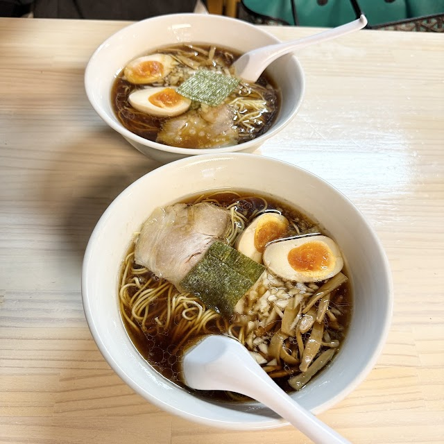
| 営業時間 | 月・火・水・木・金・土・日 11:00〜0:00 |
|---|---|
| 定休日 | なし(要最終確認) |
| 住所 | 東京都八王子市子安町１丁目８−１７ |
| 予約 | 要確認 — ☎ 042-649-1572 ／ 公式サイト |
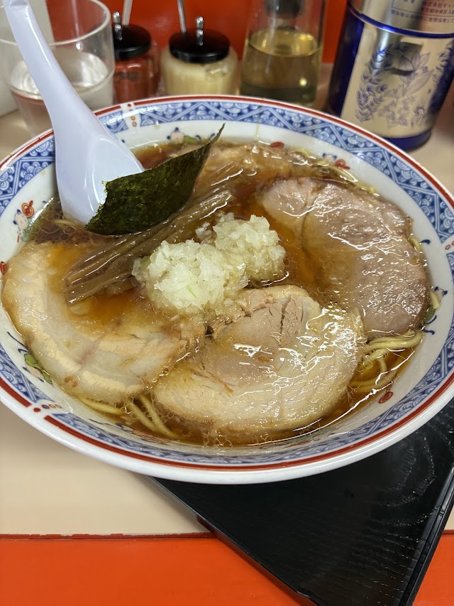
| 営業時間 | 火・水・木・金 11:00〜14:30 |
|---|---|
| 定休日 | 月・土・日曜 |
| 住所 | 東京都八王子市子安町１丁目３０−６ |
| 予約 | 要確認 — 公式サイト |
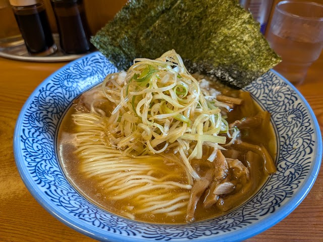
| 営業時間 | 月・火・水・木・金・土 11:00〜17:00 |
|---|---|
| 定休日 | 日曜 |
| 住所 | 東京都八王子市千人町３丁目３−３ |
| 予約 | 要確認 — ☎ 042-663-6861 ／ 公式サイト |
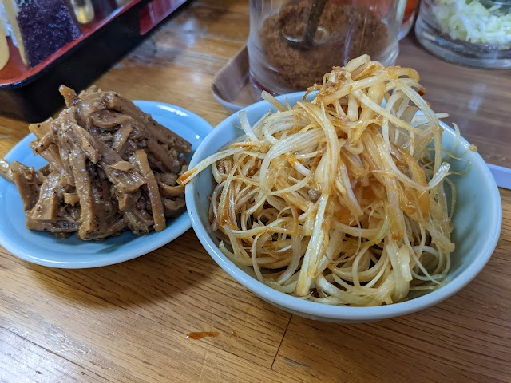
| 営業時間 | 火・水・木・金・土・日 11:00〜16:00, 17:00〜20:00 |
|---|---|
| 定休日 | 月曜 |
| 住所 | 東京都八王子市楢原町４３７−１ |
| 予約 | 要確認 — ☎ 042-624-2774 |
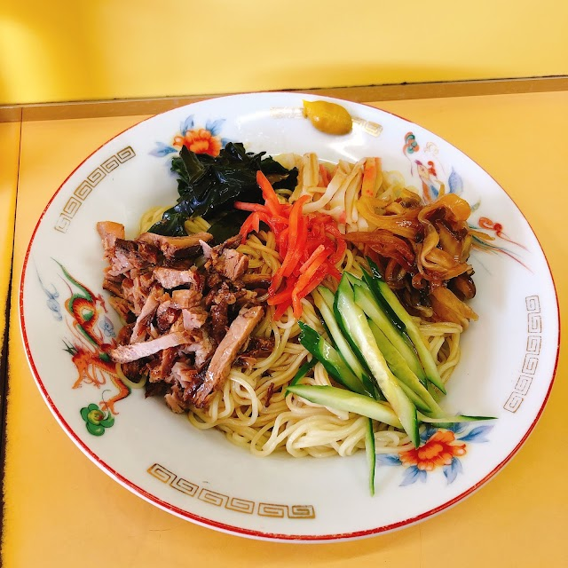
| 営業時間 | 火・水・木・金・土・日 11:00〜19:30 |
|---|---|
| 定休日 | 月曜 |
| 住所 | 東京都八王子市散田町５丁目１８−１３ |
| 予約 | 要確認 — ☎ 042-667-7727 |
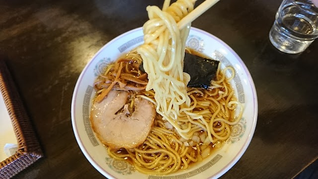
| 営業時間 | 火・水・木・金・土 11:30〜15:00 |
|---|---|
| 定休日 | 月・日曜 |
| 住所 | 東京都八王子市堀之内２丁目２９−３ |
| 予約 | 要確認 — ☎ 042-678-4948 |
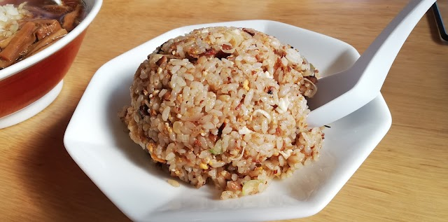
| 営業時間 | 月・水・木・金 11:00〜18:00 ／ 土 11:00〜14:30, 17:00〜20:00 ／ 日 11:00〜15:00, 17:00〜20:00 |
|---|---|
| 定休日 | 火曜 |
| 住所 | 東京都八王子市戸吹町１５７−１ |
| 予約 | 要確認 — ☎ 042-696-3715 |
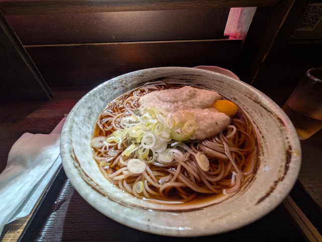
| 営業時間 | 月・火・水・木・金 10:00〜17:00 ／ 土・日 10:00〜17:30 |
|---|---|
| 定休日 | なし(要最終確認) |
| 住所 | 東京都八王子市高尾町２２０９ |
| 予約 | 要確認 — ☎ 042-661-0010 ／ 公式サイト |
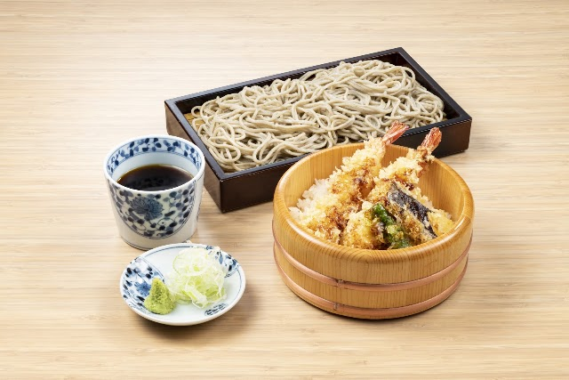
| 営業時間 | 月・火・水・木・金・土・日 9:00〜18:00 |
|---|---|
| 定休日 | なし(要最終確認) |
| 住所 | 東京都八王子市滝山町１丁目５９２−２ 道の駅 八王子滝山 |
| 予約 | 要確認 — ☎ 042-696-3175 ／ 公式サイト |
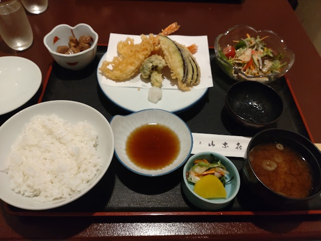
| 営業時間 | 月・火・木・金・土 11:00〜15:00, 17:00〜21:00 ／ 日 11:00〜15:00, 17:00〜20:00 |
|---|---|
| 定休日 | 水曜 |
| 住所 | 東京都八王子市八日町５−１７ |
| 予約 | 可 — ☎ 042-622-1756 ／ 公式サイト |
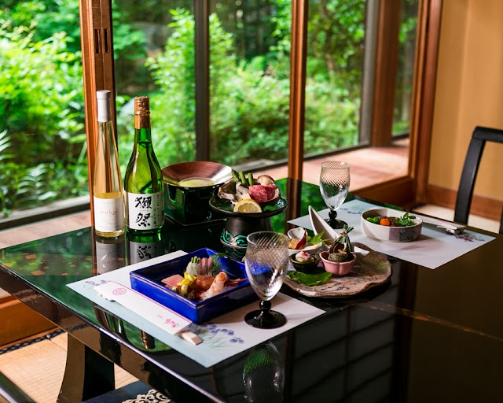
| 営業時間 | 月・火・水・木・金 11:30〜14:30, 17:00〜21:30 ／ 土・日 11:30〜21:30 |
|---|---|
| 定休日 | なし(要最終確認) |
| 住所 | 東京都八王子市暁町１丁目３６−６ |
| 予約 | 可 — ☎ 042-623-2222 ／ 公式サイト |
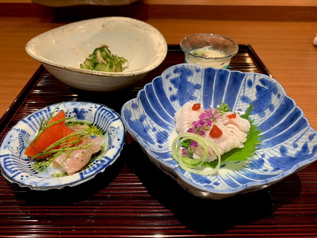
| 営業時間 | 月・火・水・木・金・土 17:00〜21:00 |
|---|---|
| 定休日 | 日曜 |
| 住所 | 東京都八王子市中町１０−１０−５ |
| 予約 | 可 — ☎ 042-649-7337 ／ 公式サイト |
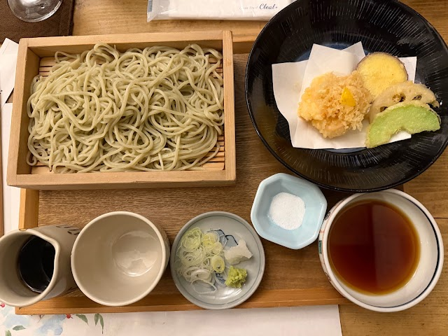
| 営業時間 | 月・火・木・日 11:30〜15:00 ／ 金・土 11:30〜15:00, 17:30〜21:00 |
|---|---|
| 定休日 | 水曜 |
| 住所 | 東京都八王子市千人町３丁目１４−１１ |
| 予約 | 可 — ☎ 042-661-2945 ／ 公式サイト |
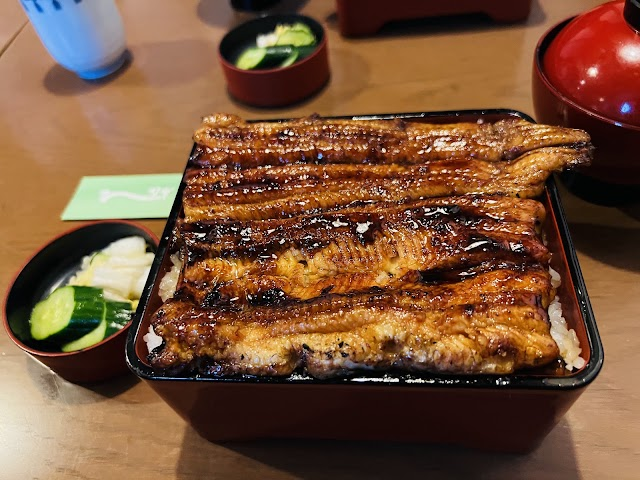
| 営業時間 | 月・火・金・土・日 11:00〜14:30, 17:00〜20:00 |
|---|---|
| 定休日 | 水・木曜 |
| 住所 | 東京都八王子市小宮町１１１２−４ |
| 予約 | 可 — ☎ 042-646-7762 ／ 公式サイト |
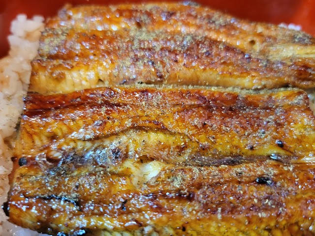
| 営業時間 | 月・水・木・金・土・日 11:30〜18:00 |
|---|---|
| 定休日 | 火曜 |
| 住所 | 東京都八王子市三崎町９−１３ 東盛ビル 2F |
| 予約 | 可 — ☎ 042-623-4008 ／ 公式サイト |
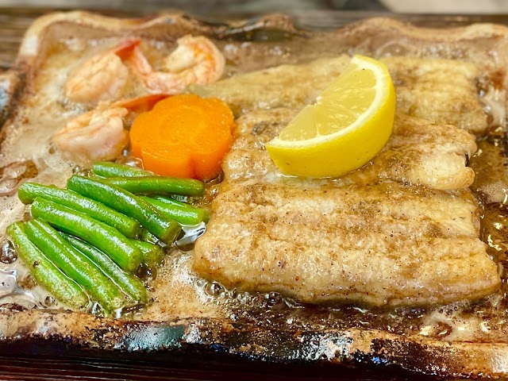
| 営業時間 | 月・火・水・金・土・日 11:00〜14:00, 17:00〜20:00 |
|---|---|
| 定休日 | 木曜 |
| 住所 | 東京都八王子市初沢町１２３１−３１ 藤田ビル |
| 予約 | 可 — ☎ 042-665-4139 |
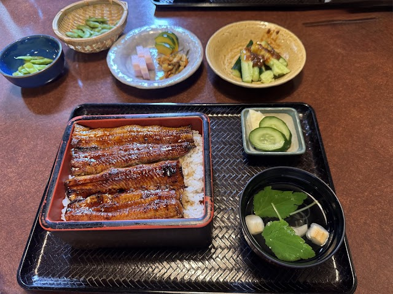
| 営業時間 | 月・火・木・金・土・日 11:00〜14:30, 17:00〜20:30 |
|---|---|
| 定休日 | 水曜 |
| 住所 | 東京都八王子市越野２１−３４ |
| 予約 | 可 — ☎ 042-676-7878 ／ 公式サイト |
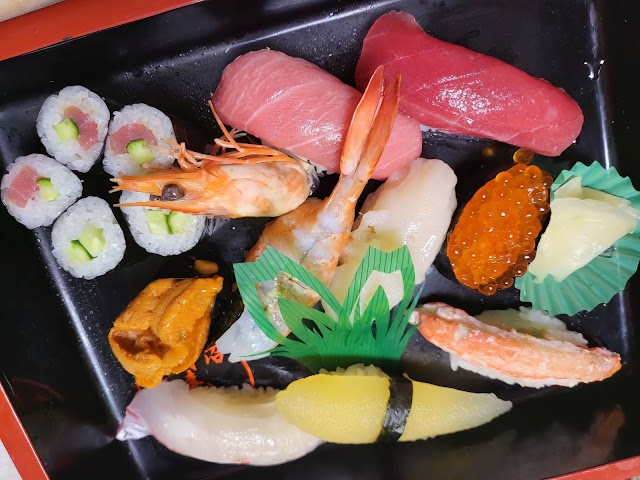
| 営業時間 | 水・木・金 11:30〜14:00, 17:00〜21:00 ／ 土 11:30〜21:30 ／ 日 11:30〜21:00 |
|---|---|
| 定休日 | 月・火曜 |
| 住所 | 東京都八王子市長沼町７０２−２３ |
| 予約 | 可 — ☎ 042-635-3985 ／ 公式サイト |
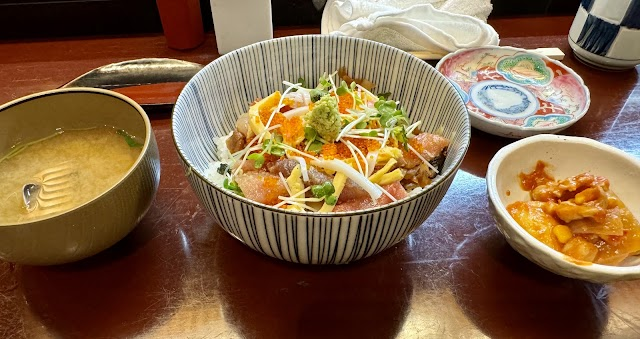
| 営業時間 | 火・水・木・金・土・日 11:30〜14:00, 17:00〜22:00 |
|---|---|
| 定休日 | 月曜 |
| 住所 | 東京都八王子市横山町２−９ クリオ八王子横山町 |
| 予約 | 可 — ☎ 042-642-2655 ／ 公式サイト |
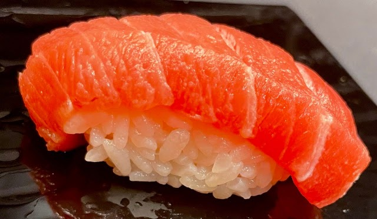
| 営業時間 | 火・木・金・土 17:30〜22:30 ／ 水 12:00〜14:00, 17:30〜22:30 ／ 日 12:00〜14:00, 17:00〜22:00 |
|---|---|
| 定休日 | 月曜 |
| 住所 | 東京都八王子市子安町１丁目２−２ 川和ビル １F |
| 予約 | 可 — ☎ 050-5484-0543 ／ 公式サイト |
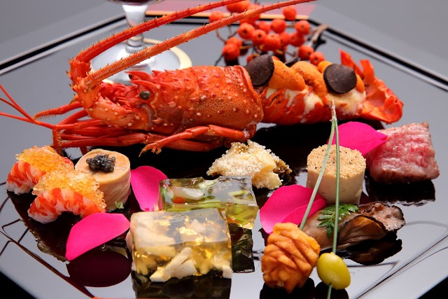
| 営業時間 | 月・火・木・金 11:30〜21:30 ／ 土・日 11:00〜21:30 |
|---|---|
| 定休日 | 水曜 |
| 住所 | 東京都八王子市尾崎町１２９ |
| 予約 | 可 — ☎ 042-691-5500 ／ 公式サイト |
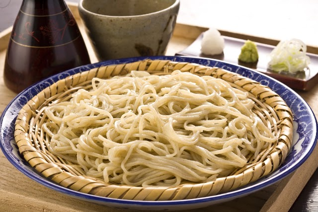
| 営業時間 | 月・木・金・土・日 11:00〜15:00, 17:00〜20:30 ／ 火 11:00〜15:00 |
|---|---|
| 定休日 | 水曜 |
| 住所 | 東京都八王子市越野３−１０ |
| 予約 | 可 — ☎ 042-676-9505 ／ 公式サイト |
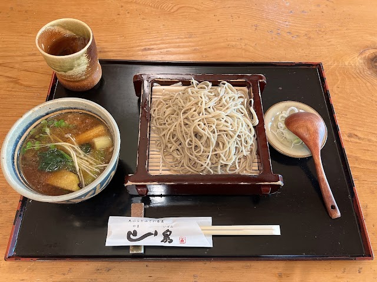
| 営業時間 | 火・水・木・金・土・日 11:30〜14:00, 17:00〜20:30 |
|---|---|
| 定休日 | 月曜 |
| 住所 | 東京都八王子市千人町４丁目２−８ |
| 予約 | 可 — ☎ 042-668-1212 ／ 公式サイト |
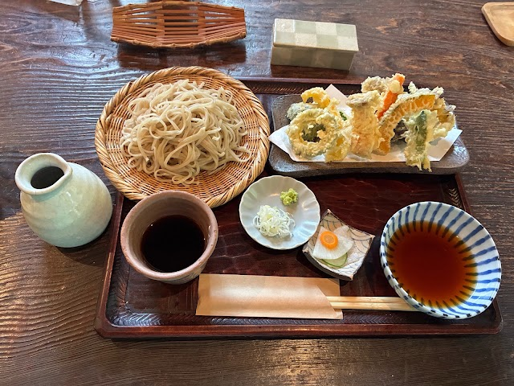
| 営業時間 | 月・水・木・金・土・日 11:00〜15:00 |
|---|---|
| 定休日 | 火曜 |
| 住所 | 東京都八王子市高尾町２０３１ |
| 予約 | 可 — ☎ 042-673-5592 ／ 公式サイト |
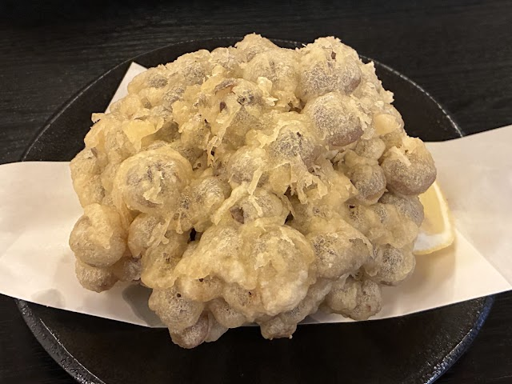
| 営業時間 | 月・火・水・木・金 11:00〜20:30 ／ 土・日 11:00〜21:00 |
|---|---|
| 定休日 | なし(要最終確認) |
| 住所 | 東京都八王子市平岡町２４−３ |
| 予約 | 可 — ☎ 042-625-7743 ／ 公式サイト |
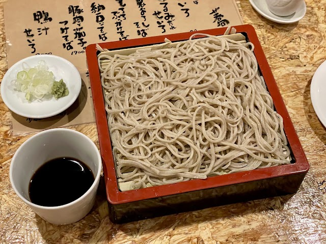
| 営業時間 | 火・水・木・金・土・日 17:30〜22:00 |
|---|---|
| 定休日 | 月曜 |
| 住所 | 東京都八王子市横山町１６−５ |
| 予約 | 可 — ☎ 042-634-8807 ／ 公式サイト |
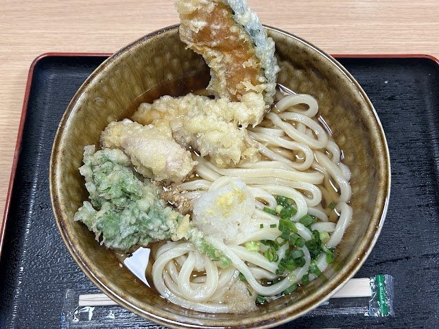
| 営業時間 | 月・火・木・土 11:00〜14:30, 17:30〜21:00 ／ 水・金 11:00〜14:30 |
|---|---|
| 定休日 | 日曜 |
| 住所 | 東京都八王子市八日町１０−１３ |
| 予約 | 要確認 — ☎ 042-628-2330 |
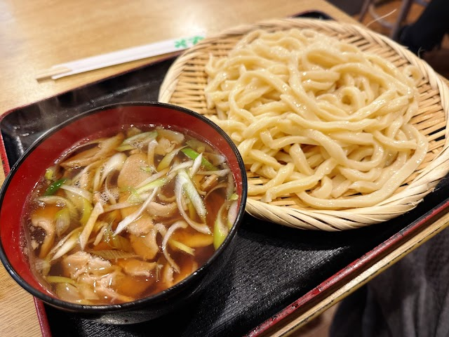
| 営業時間 | 火・水・木・金・土・日 11:00〜15:00 |
|---|---|
| 定休日 | 月曜 |
| 住所 | 東京都八王子市中町１１−４ |
| 予約 | 要確認 — ☎ 042-621-7767 ／ 公式サイト |
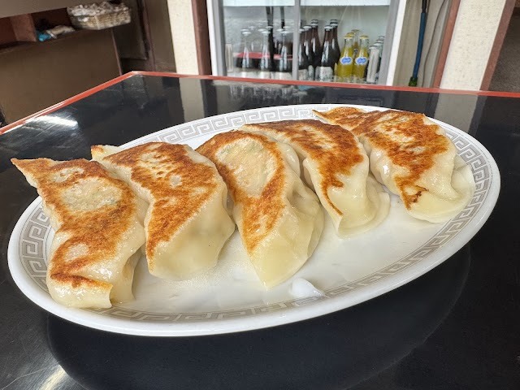
| 営業時間 | 月・火・水・木・金・土 11:30〜13:45, 17:30〜19:45 |
|---|---|
| 定休日 | 日曜 |
| 住所 | 東京都八王子市北野町５８１−４ |
| 予約 | 要確認 — ☎ 042-645-5420 |
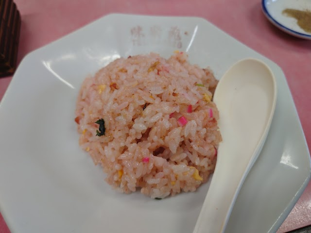
| 営業時間 | 月・金・土・日 11:00〜15:00, 17:00〜20:00 |
|---|---|
| 定休日 | 火・水・木曜 |
| 住所 | 東京都八王子市並木町３９−２８ |
| 予約 | 可 — ☎ 042-664-0528 |
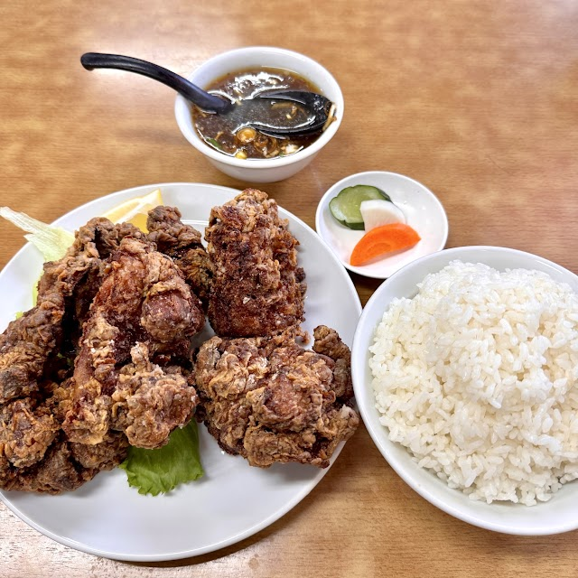
| 営業時間 | 月・火・水・木・金・土・日 11:00〜20:30 |
|---|---|
| 定休日 | なし(要最終確認) |
| 住所 | 東京都八王子市大楽寺町１８４ |
| 予約 | 要確認 — ☎ 042-651-9927 |
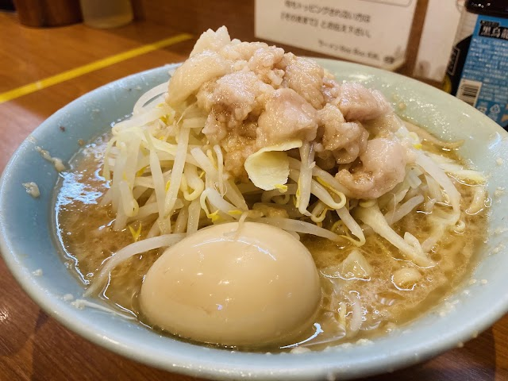
| 営業時間 | 火・水・木・金 11:00〜15:00, 17:30〜21:00 ／ 土 11:00〜20:00 ／ 日 8:00〜15:00 |
|---|---|
| 定休日 | 月曜 |
| 住所 | 東京都八王子市堀之内２丁目１３−１６ |
| 予約 | 要確認 — ☎ 042-675-6806 ／ 公式サイト |
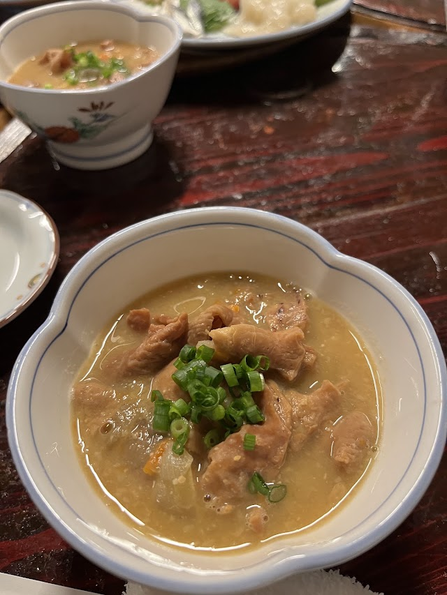
| 営業時間 | 月・火・水・木・金・土 16:30〜22:30 |
|---|---|
| 定休日 | 日曜 |
| 住所 | 東京都八王子市旭町７−１０ |
| 予約 | 可 — ☎ 042-622-5457 |
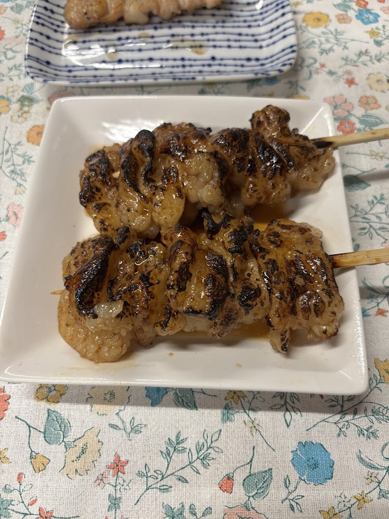
| 営業時間 | 火・水・木・金・土 17:30〜23:00 |
|---|---|
| 定休日 | 月・日曜 |
| 住所 | 東京都八王子市中町１０−１３ |
| 予約 | 可 — ☎ 042-622-5735 |
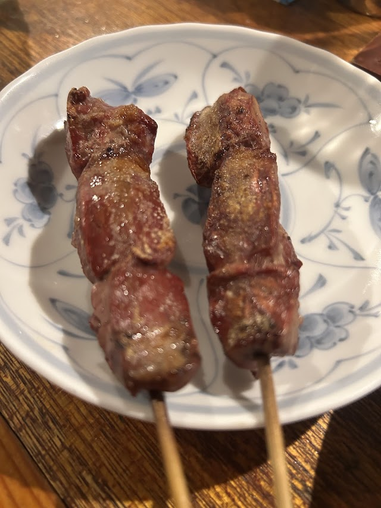
| 営業時間 | 火・水・金・土 17:00〜21:00 |
|---|---|
| 定休日 | 月・木・日曜 |
| 住所 | 東京都八王子市中町１０−３ |
| 予約 | 可 — ☎ 042-627-7224 |
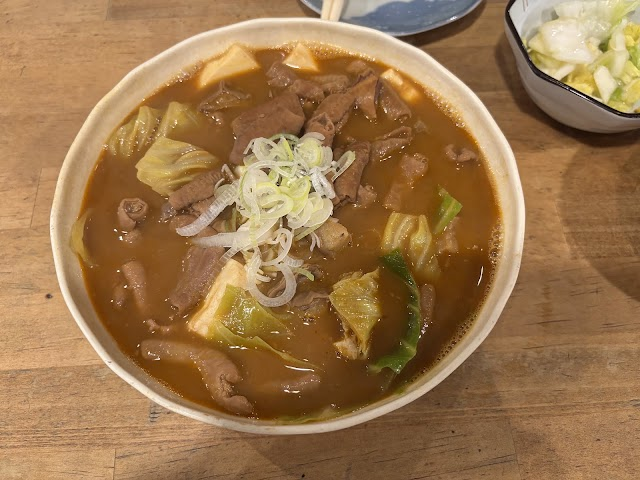
| 営業時間 | 火・水・木 16:00〜21:30 ／ 金 16:00〜22:00 ／ 土 15:00〜21:00 ／ 日 15:00〜21:30 |
|---|---|
| 定休日 | 月曜 |
| 住所 | 東京都八王子市子安町１丁目２−１ |
| 予約 | 可 — ☎ 042-645-7117 ／ 公式サイト |
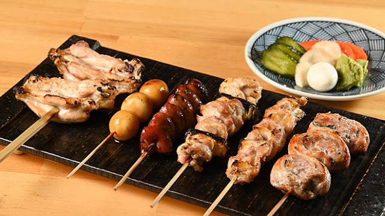
| 営業時間 | 月・火・水・木・金 17:00〜23:00 ／ 土・日 15:00〜22:00 |
|---|---|
| 定休日 | なし(要最終確認) |
| 住所 | 東京都八王子市東浅川町１０６７ |
| 予約 | 可 — ☎ 042-690-9992 ／ 公式サイト |
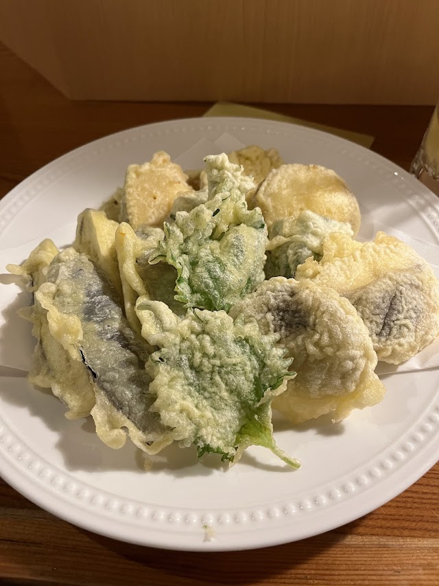
| 営業時間 | 火・水・木・金・土 17:00〜23:00 |
|---|---|
| 定休日 | 月・日曜 |
| 住所 | 東京都八王子市北野町５５２−７ |
| 予約 | 可 |
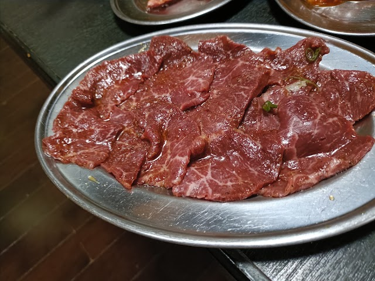
| 営業時間 | 月・水・木・金・土・日 17:00〜0:00 |
|---|---|
| 定休日 | 火曜 |
| 住所 | 東京都八王子市千人町２丁目３−１ |
| 予約 | 可 — ☎ 042-661-5095 |
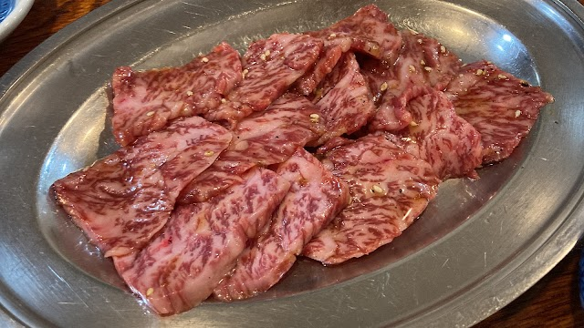
| 営業時間 | 火・水・木・金 18:00〜23:00 ／ 土・日 17:00〜23:00 |
|---|---|
| 定休日 | 月曜 |
| 住所 | 東京都八王子市天神町２−１３ |
| 予約 | 可 — ☎ 042-625-2989 ／ 公式サイト |
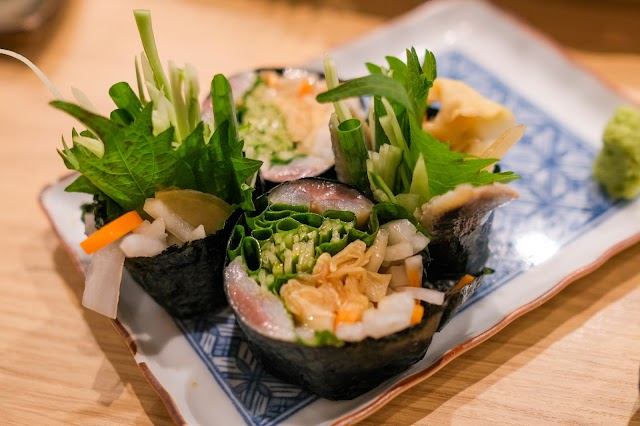
| 営業時間 | 月・火・水・木・金・土・日 16:00〜23:00 |
|---|---|
| 定休日 | なし(要最終確認) |
| 住所 | 東京都八王子市三崎町６−１５ 清水ビル 1Ｆ |
| 予約 | 可 — 公式サイト |
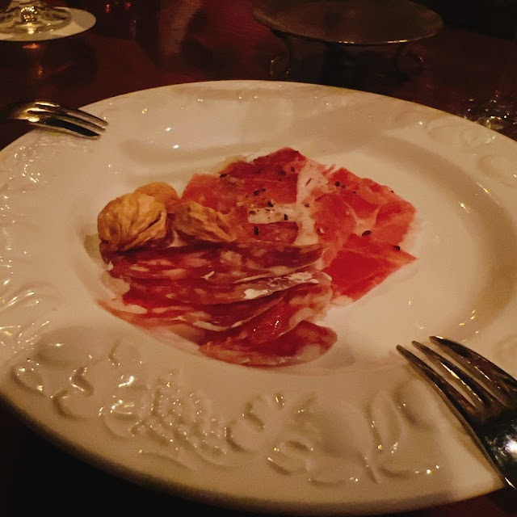
| 営業時間 | 木・金・土 19:00〜1:00 |
|---|---|
| 定休日 | 月・火・水・日曜 |
| 住所 | 東京都八王子市三崎町４−３ 2階 |
| 予約 | 可 — ☎ 042-626-6866 |
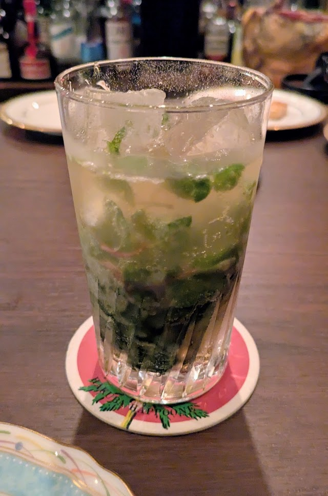
| 営業時間 | 火・水・木・金・土 19:00〜2:00 ／ 日 19:00〜0:30 |
|---|---|
| 定休日 | 月曜 |
| 住所 | 東京都八王子市中町３−９ クレインコート 301 |
| 予約 | 可 — ☎ 042-656-6111 ／ 公式サイト |
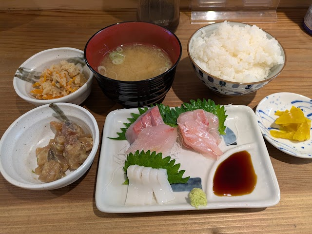
| 営業時間 | 月・木 16:00〜22:00 ／ 火・水・金 12:00〜14:00, 16:00〜22:00 ／ 土 14:00〜22:00 |
|---|---|
| 定休日 | 日曜 |
| 住所 | 東京都八王子市東町３−８ 浦島ビル |
| 予約 | 要確認 — ☎ 042-649-1196 ／ 公式サイト |
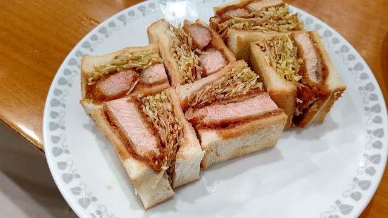
| 営業時間 | 月・火・木・金・土・日 11:30〜14:00, 17:00〜20:00 |
|---|---|
| 定休日 | 水曜 |
| 住所 | 東京都八王子市台町４丁目４５−３ ＭＳビル |
| 予約 | 要確認 — ☎ 042-664-0701 |
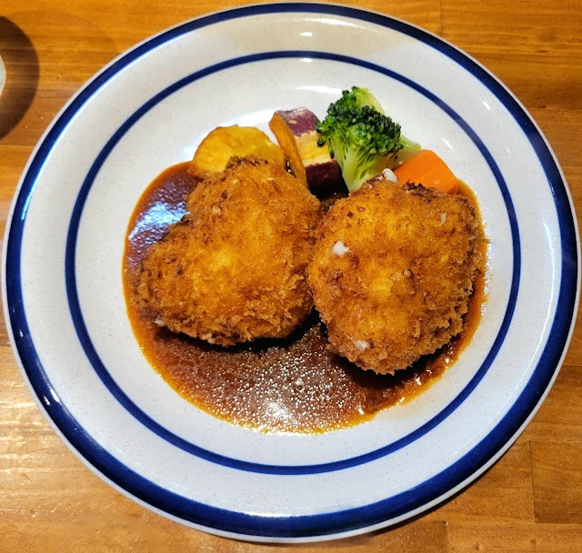
| 営業時間 | 火・水・木・金・土・日 11:30〜15:00, 17:00〜21:00 |
|---|---|
| 定休日 | 月曜 |
| 住所 | 東京都八王子市横山町２１−１３ |
| 予約 | 要確認 — ☎ 042-697-2248 ／ 公式サイト |
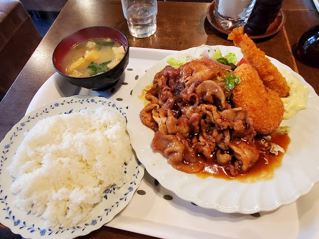
| 営業時間 | 月・火・木・土・日 11:30〜14:00 |
|---|---|
| 定休日 | 水・金曜 |
| 住所 | 東京都八王子市大和田町３丁目２０−４ |
| 予約 | 要確認 — ☎ 042-645-2733 |
| 営業時間 | 月・火・水・金・土 17:00〜23:30 ／ 日 17:00〜22:30 |
|---|---|
| 定休日 | 木曜 |
| 住所 | 東京都八王子市三崎町９−８ オザワビル 1F |
| 予約 | 可 — ☎ 080-2659-9974 |
| 営業時間 | 月 11:30〜14:30 ／ 木・金・土・日 11:30〜14:30, 17:00〜20:30 |
|---|---|
| 定休日 | 火・水曜 |
| 住所 | 東京都八王子市本町２−２ |
| 予約 | 可 — ☎ 042-622-4448 ／ 公式サイト |
| 営業時間 | 月・火・木 11:30〜15:00, 18:00〜22:00 ／ 金・土・日 11:30〜15:00, 17:30〜22:00 |
|---|---|
| 定休日 | 水曜 |
| 住所 | 東京都八王子市西片倉２丁目６−１６ ラベニール |
| 予約 | 可 — ☎ 042-638-0878 ／ 公式サイト |
| 営業時間 | 月・火・木・金 11:30〜14:30, 17:00〜20:30 ／ 土・日 11:30〜14:30, 16:00〜20:30 |
|---|---|
| 定休日 | 水曜 |
| 住所 | 東京都八王子市めじろ台１丁目９−１ |
| 予約 | 可 — ☎ 042-673-4988 ／ 公式サイト |
| 営業時間 | 月・火・水・木・日 11:30〜15:00, 17:30〜0:00 ／ 金・土 11:30〜15:00, 17:30〜2:00 |
|---|---|
| 定休日 | なし(要最終確認) |
| 住所 | 東京都八王子市北野町５４６−１０ |
| 予約 | 可 — ☎ 042-646-7418 |
| 営業時間 | 月・火・水・木・金・土・日 11:30〜15:00, 17:30〜21:30 |
|---|---|
| 定休日 | なし(要最終確認) |
| 住所 | 東京都八王子市子安町３丁目８−１０ |
| 予約 | 可 — ☎ 042-649-6323 ／ 公式サイト |
| 営業時間 | 火・水・木・金・土・日 11:00〜22:00 |
|---|---|
| 定休日 | 月曜 |
| 住所 | 東京都八王子市上柚木２０５ |
| 予約 | 可 — ☎ 042-676-3409 ／ 公式サイト |
| 営業時間 | 月・火・水・木 17:00〜20:00 ／ 金 17:00〜21:00 ／ 土 11:30〜21:00 ／ 日 11:30〜20:00 |
|---|---|
| 定休日 | なし(要最終確認) |
| 住所 | 東京都八王子市高尾町２２６４ タカオネ |
| 予約 | 可 — ☎ 042-662-3955 ／ 公式サイト |
| 営業時間 | 月・木・金・土・日 11:00〜14:30, 17:30〜21:00 |
|---|---|
| 定休日 | 火・水曜 |
| 住所 | 東京都八王子市横川町１０５−７７ |
| 予約 | 可 — ☎ 042-627-6755 ／ 公式サイト |
| 営業時間 | 月・水・木・金・土・日 9:00〜19:00 |
|---|---|
| 定休日 | 火曜 |
| 住所 | 東京都八王子市本町１２−４ 野崎コーポラス |
| 予約 | 要確認 — ☎ 042-626-1416 |
| 営業時間 | 火・水・木・金・土 12:00〜19:00 ／ 日 12:00〜17:00 |
|---|---|
| 定休日 | 月曜 |
| 住所 | 東京都八王子市三崎町２−１０ |
| 予約 | 要確認 — ☎ 042-625-2055 ／ 公式サイト |
| 営業時間 | 月・木・金・土・日 10:00〜17:00 |
|---|---|
| 定休日 | 火・水曜 |
| 住所 | 東京都八王子市八日町１０−３ |
| 予約 | 要確認 — ☎ 042-622-2904 ／ 公式サイト |
| 営業時間 | 月・火・木・金・土・日 9:00〜18:00 |
|---|---|
| 定休日 | 水曜 |
| 住所 | 東京都八王子市横山町２２−２ |
| 予約 | 要確認 — ☎ 042-644-2141 ／ 公式サイト |
| 営業時間 | 月・水・木・金・土・日 9:00〜18:30 |
|---|---|
| 定休日 | 火曜 |
| 住所 | 東京都八王子市子安町４丁目２７−１２ 山上ビル |
| 予約 | 要確認 — ☎ 042-649-6024 |
| 営業時間 | 火・水・木・金・土 9:00〜21:00 ／ 日 9:30〜20:00 |
|---|---|
| 定休日 | 月曜 |
| 住所 | 東京都八王子市下柚木２丁目９−３ |
| 予約 | 要確認 — ☎ 042-676-9329 ／ 公式サイト |
| 営業時間 | 火・水・木・金・土・日 8:00〜18:00 |
|---|---|
| 定休日 | 月曜 |
| 住所 | 東京都八王子市上柚木２丁目１１２−９ |
| 予約 | 要確認 — ☎ 042-682-3378 ／ 公式サイト |
| 営業時間 | 月・火・金 10:00〜17:00 ／ 土・日 8:00〜17:00 |
|---|---|
| 定休日 | 水・木曜 |
| 住所 | 東京都八王子市高尾町１５８０ すえひろビル 2F |
| 予約 | 要確認 — 公式サイト |
| 営業時間 | 月・火・水・金・土 10:00〜18:00 |
|---|---|
| 定休日 | 木・日曜 |
| 住所 | 東京都八王子市初沢町１２９８−２ |
| 予約 | 要確認 — ☎ 080-1217-6955 ／ 公式サイト |
| 営業時間 | 月・火・水・木・金・土・日 11:30〜19:00 |
|---|---|
| 定休日 | なし(要最終確認) |
| 住所 | 東京都八王子市打越町１１８４−２ ポールドゥソレイユ 1階 |
| 予約 | 要確認 — 公式サイト |
本ガイドは個人利用目的で作成。掲載情報は2026年8月時点の調査に基づく。写真出典: Google Maps投稿写真(©各投稿者/Google)。